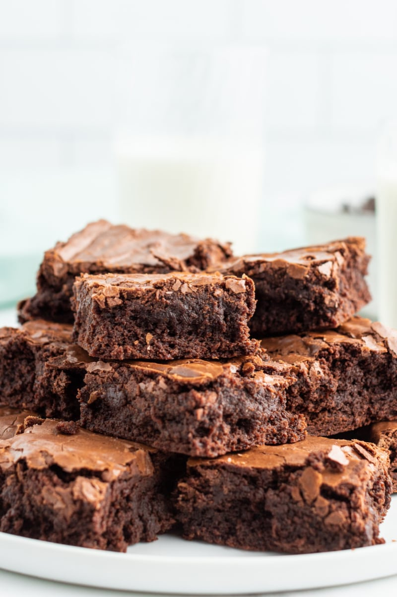

Chocoalte Brownie Recipe

Ingredients
- 6 tablespoons unsalted butter
- 6 ounces semisweet chocolate
- ¼ cup unsweetened Dutch-process cocoa powder
- ¾ cup all purpose flour
- ¼ teaspoon baking powder
- ¼ teaspoon salt
- 2 large eggs
- 1 cup granulated sugar
- 2 teaspoons vanilla extract
Steps
- Preheat the oven to 350°F. Line an 8-inch square baking dish with parchment paper, leaving a 2-inch overhang on 2 sides. Spray with nonstick spray; set aside.
- In a heatproof bowl set over a pan of simmering water, melt together the butter, chocolate and cocoa. Remove from heat. Stir until smooth; let cool slightly.
- In a medium bowl, whisk together the flour, baking powder and salt; set aside. In a large bowl, use an electric mixer to combine the eggs, sugar, and vanilla. Beat until pale, about 4 minutes. Beat in the chocolate mixture. Add the flour mixture; beat until just combined, scraping down the sides of the bowl as needed.
- Scrape the batter into the prepared pan, and smooth the top. Bake until a toothpick or thin knife inserted into the center of the brownies comes out with a few crumbs, 30 to 35 minutes (do not over-bake). Let cool 30 minutes; lift out of pan, and transfer to wire rack. Let cool completely. Cut into 16 small brownies or 8 larger brownies.